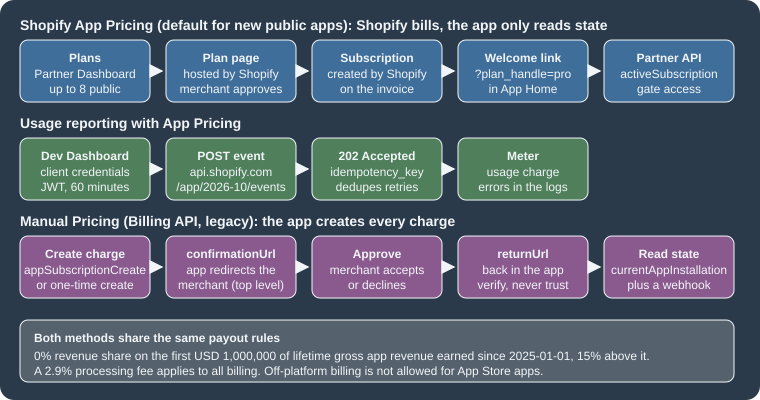

Billing, App Store and Deployment
|
This content was generated with the assistance of AI and should be verified against the official documentation before being relied on in production. |
This page was written against the GraphQL Admin API version 2026-10 (the latest stable version, released on 2026-10-01),
the Partner API and the App Events API at version 2026-10, Shopify CLI 5.0.0 (Node.js 22.12 or later),
@shopify/shopify-app-react-router 4.0.0 (the type-checked examples ran against 3.0.2, the version that the public app
template installs, because the template still depends on ^3.0.1) and @shopify/shopify-api 15.0.1, and checked on
2026-10-27. Billing, review and deployment concern apps that are distributed to many merchants through the Shopify App
Store, so the page applies to public apps on every Shopify plan; a merchant’s plan decides which extension surfaces an app
can use (see the page on plans and Shopify Plus) but it does not
change how the app is billed.
A Shopify app that works on a development store is not yet a product. Three more things have to be solved before merchants
can pay for it and rely on it. First, the app has to be charged for, and Shopify requires that every charge of an App Store
app goes through a Shopify billing system: Shopify App Pricing, which was called managed pricing until 2026, or the Billing
API, which is now called Manual Pricing (Legacy). Second, the app has to pass the Shopify App Store requirements and the
review that enforces them, including the security requirements. Third, every change to the app configuration and its
extensions has to be shipped repeatably, which in Shopify’s model means creating and releasing an app version with
shopify app deploy, ideally from a pipeline rather than from a laptop. This page covers the three, in that order, and ends
with a security checklist that applies to all of them.
The page sits at the end of the app-building pages of this section. It builds on
apps: overview and scaffolding (what an app is, the
shopify.app.toml file and the React Router template),
authentication and access scopes (ID tokens, token exchange and
expiring offline tokens) and webhooks and events (HMAC verification and the
three mandatory compliance webhooks), and the development environment
page explains the Shopify CLI itself.
The running example is a small companion app for the Pocket Coffee shop, called Roast Badge. It shows the roast date of a bag of beans as a badge on the product page, and it prints a roast label for every order line. Roast Badge is sold with a free plan, a Pro plan of USD 9 per month or USD 90 per year with a 14-day trial, and a per-label usage charge of USD 0.05. Every example below prices, tests, reviews and deploys that app.
Two things need to be said about what was and was not executed, and the details are in What was run and what was not.
This page was prepared without a Shopify account, a Partner organization or a store, and nothing was ever sent to Shopify.
What did run locally are the GraphQL documents (validated against the 2026-10 Admin schema), the React Router billing code
(type-checked against the official packages), the App Events and Partner API client code (run against a local stand-in
server), the two GitHub Actions workflows (checked with actionlint and their build, type-check and security steps run
locally), and shopify app build and shopify app security check on a Pocket Coffee app configuration. Everything that
needs an account is described from Shopify’s documentation as read on 2026-10-27, and the client ids, secrets, tokens and
store domains in the examples are placeholders.
Billing, review and release at a glance
Money, trust and change are the three axes of this page. The table shows which question each part answers and where the rest of the page treats it.
| Question | Answer in one sentence | Where |
|---|---|---|
How does the app charge merchants? |
With Shopify App Pricing (the default for new public apps, configured in the Partner Dashboard and read through the Partner API and the App Events API) or, for what App Pricing cannot express, with the Billing API (Manual Pricing). |
Choosing a billing method, Shopify App Pricing in detail, Manual Pricing with the Billing API |
What does Shopify take? |
0% of the first USD 1,000,000 of lifetime gross app revenue earned since 2025-01-01 and 15% above it for standard-rate developers, plus a 2.9% processing fee on all billing. |
|
What must the app satisfy before it is listed? |
The numbered App Store requirements (policy, functionality, security, listing, category-specific), a review that moves the app through Draft, Submitted, Reviewed and Published, and a security review. |
|
How does a change reach merchants? |
An app version (a snapshot of the configuration and all extensions) is created by |
|
How is that automated? |
A GitHub Actions workflow that authenticates with an app automation token held as a GitHub secret. |
|
How is the whole thing kept safe? |
App Store security minimums, the |
Distribution models and where billing applies
Which billing system applies depends first on how the app is distributed, because only public distribution goes through the Shopify App Store. The distribution method cannot be changed after it is chosen, and when a team keeps separate apps for development and for production the method is chosen on the production app.
| Distribution | Where it can be installed | Approval | Billing |
|---|---|---|---|
Public distribution |
Many unrelated stores, through the Shopify App Store. |
Required: the app review described below. |
Must use Shopify App Pricing or the Billing API for every charge; off-platform billing is not allowed. |
Custom distribution |
One store, several stores of the same Plus organization, or development stores. |
Not required. |
The App Store requirements, including the billing requirement 1.2, apply to listed apps; a custom app needs no approval, and how it is paid for is settled between the developer and the merchant. |
Shopify admin custom app (legacy) |
One store; no longer available for new apps. |
Not required. |
Cannot charge merchants through Shopify’s app billing system, cannot use App Bridge to appear in the admin and cannot use app extensions. |
Source: Shopify: About app distribution
Two older app types no longer exist: private apps (deprecated in January 2022 and converted to custom apps on 2023-01-20)
and unpublished apps (deprecated on 2019-12-09). Older books describe both, together with the Billing API of that time, a
REST RecurringApplicationCharge created by a hand-written OAuth app. That route is closed to new apps: the REST Admin API
has been legacy since 2024-10-01, and since 2025-04-01 new public apps must be built exclusively with the GraphQL Admin API,
so everything on this page uses GraphQL. Publishing to the Shopify App Store also needs a one-time registration of USD 19 per Partner account,
which is not required for custom apps built for a single merchant.
Choosing a billing method
Shopify gives the decision as five rules, and the page keeps their order because the first rule that matches wins.
-
New public apps use Shopify App Pricing. It is the default when a new public app is submitted. Plans, usage meters and free trials are configured in the Partner Dashboard instead of in billing code.
-
Existing public apps whose pricing model is supported should move to Shopify App Pricing; it is the recommended path.
-
Existing Billing API integrations that are not migrated keep working. Manual Pricing remains supported, and an existing
billing.requesthelper orappSubscriptionCreatecall does not have to be replaced. -
One-time purchases and pricing models that App Pricing does not support use Manual Pricing with the Billing API. Shopify App Pricing does not support one-time app purchases.
-
Subscriptions for the merchant’s own products (a coffee club that ships beans every month, for example) are not app billing at all. They use purchase options with selling plans and subscription contracts.
The names changed in 2026, and older material uses them differently, so the table maps them.
| Name in older pages, books and blog posts | Name in the current documentation | Notes |
|---|---|---|
Managed pricing |
Shopify App Pricing |
Renamed and extended with App Events, App Billing Events and the Active Subscription and Historical Events APIs of the Partner API. An app that used managed pricing is now on Shopify App Pricing and keeps billing without interruption. |
Billing API, "manual billing", recurring application charges |
Manual Pricing (Legacy) |
Built with the GraphQL Admin API mutations |
Billing API in the App Store requirements (1.2) |
"Shopify App Pricing or the Shopify Billing API" |
Both names still appear in the requirements text; they are the two accepted billing systems. |
The changelog shows how recent the change is. "Shopify App Pricing: charge for usage, recurring subscriptions, or both" was
published on 2026-05-12, "App Pricing: more plans, no-charge plan testing, negative and fractional App Events" on
2026-07-09 and "Move existing subscriptions to Shopify App Pricing" on 2026-09-29, the day on which the CLI commands
shopify app subscription-migrations list|schedule|cancel|status|unschedule were announced.

The two systems differ on every axis that matters when the code is written, so the comparison below is the table to keep at hand.
| Aspect | Shopify App Pricing | Manual Pricing (Billing API) |
|---|---|---|
Where plans are defined |
In the Partner Dashboard, under the app’s listing (Pricing content). Up to eight public plans and any number of private plans. |
In code: the app decides the plans and creates every charge. |
Plan selection page |
Hosted by Shopify in the admin, at |
Built and hosted by the app. |
Creating a charge |
Shopify creates the subscription when the merchant approves a plan. The app must not call |
|
Where subscription state is read |
The Partner API ( |
The GraphQL Admin API ( |
How changes are announced |
URL parameters on the redirect to the welcome link ( |
Webhook topics |
Recurring models |
Free, monthly, yearly, or monthly with a yearly option. |
Every 30 days or annual ( |
Usage models |
Meters that receive events from the App Events API; fixed, graduated or volume pricing; monthly billing only; up to five active meters per plan and six tiers per meter; no usage caps. |
A usage line item with a |
One-time charges |
Not supported. |
|
Currency |
Prices are set in USD only; merchants who are billed in a supported local currency pay the converted amount. |
Charges can be created directly in the merchant’s local billing currency (read it with |
Free trials |
Trial days per plan; the days a merchant has used are tracked over 180 days, so reinstalling does not restart a trial. |
|
Testing |
No-charge plans on development stores of the same Partner organization. |
|
Revenue share and fees
Revenue share is the other half of the pricing decision, and it is the same for both billing systems. Shopify’s model is that a developer keeps all of the first USD 1,000,000 of lifetime gross app revenue and 85% of what is earned above it. Only revenue earned on or after 2025-01-01 counts toward the threshold, and every billing transaction carries a 2.9% processing fee and applicable sales tax, charged separately from the revenue share.
| Lifetime gross app revenue | Revenue share rate |
|---|---|
First USD 1,000,000 |
0% |
Above USD 1,000,000 |
15% |
These are the standard rates, for developers who earned less than USD 20,000,000 through the App Store in the prior calendar year and have gross company revenue below USD 100,000,000. Developers at or above either limit pay 15% on all app revenue. Shopify reassesses eligibility each year without resetting the threshold. Revenue share is computed on gross sales, so refunds are not taken into account, and it is cumulative over all of a developer’s apps and over every Associated Developer Account, although payouts are made separately for each Partner account. Income from the Theme Store and from referrals is not part of the calculation. Earnings from sales to merchants in some countries and regions carry an additional Regulatory Operating Fee.
For Roast Badge the arithmetic is simple. A merchant who pays the USD 9 monthly plan for a full year generates USD 108 of gross revenue, of which the 2.9% processing fee is USD 3.13 (rounded), and the developer receives the rest, because the first USD 1,000,000 carries no revenue share. The USD 19 registration fee is paid once for the Partner account.
Shopify App Pricing in detail
With Shopify App Pricing the app does not define billing configuration and does not create charges in code. Plans, prices, trials and usage meters live in the Partner Dashboard, Shopify hosts the page on which the merchant picks a plan, and Shopify creates the subscription, handles proration, upgrades, downgrades, price updates, no-charge testing and chargebacks, and adds the charge to the merchant’s Shopify invoice. The app’s integration has three small jobs: send the merchant to the plan page when there is no subscription, check the subscription before it grants paid features, and report usage when a plan is metered.
Pricing models and plans
Three billing models are supported, and a plan can combine the first two.
-
Recurring charges: a free plan, a monthly plan, a yearly plan or a monthly plan with a discounted yearly option.
-
Usage-based charges: fixed, graduated or volume pricing for the events that the app reports.
-
Combined: a recurring fee plus usage, or usage only (a recurring fee of zero).
Plans are either public or private. Public plans are visible to every merchant, on the plan selection page and in the App
Store listing, and an app can have up to eight of them. Private plans are offered only to the stores listed on the plan
(the store domains such as example.myshopify.com), they are not translated, they appear on the plan selection page only for
a logged-in user of an authorized store, and an app can have any number of them as long as no store is authorized for more
than eight. A plan’s billing model (price, intervals, trial) is edited separately from its description (display name and
top features), because descriptions are localized: a plan is shown to merchants only when it has a description in the
language of the listing the merchant sees.
The plan editor has these fields:
| Field | Meaning |
|---|---|
Billing |
Free, monthly, yearly, or monthly with a yearly option. |
Monthly charge, Yearly charge |
The prices, in USD, when the billing choice requires them. |
Free trial duration |
Number of trial days. The days a merchant has used are tracked over a 180-day period, so a merchant who used 12 of 15 days, uninstalled and reinstalled 90 days later still has 3 days left. Changing the trial length subtracts the days already used. |
Development stores: free for partners and developers |
Lets other Partners select the plan at no charge on their development stores; the price still applies to production stores. |
Welcome link |
Where the merchant lands after approving the plan charge (a relative path for apps with a landing page in App Home, a full URL otherwise). |
Display name, Top features |
The localized description of the plan. |
Usage meters |
Up to five active meters per plan: a name, a handle ( |
A downgrade from a paid plan to a free plan is deferred: it takes effect at the end of the paid plan’s current billing cycle.
Opting in
A new public app uses Shopify App Pricing by default when it is submitted. An existing app without active paid merchants can opt in, and an app that already bills through the Billing API follows the migration described later. The setting lives in the Partner Dashboard and not in the Dev Dashboard: when an organization has moved its apps to the Dev Dashboard the app’s configuration, monitoring and logs moved with it, but the App Store listing and its pricing stay in the Partner Dashboard. The path is App distribution, the app, Distribution, Manage listing beside Shopify App Store listing, Edit for a published language, Manage under Pricing content, Settings, and then Shopify App Pricing under Pricing method, followed by the default billing frequency (monthly or yearly; merchants can still toggle between the two). Plans created earlier with the Billing API that are not compatible with App Pricing have to be removed before the switch is possible. Once an app has opted in, it can no longer create new recurring application charges with the Billing API, while charges created before the switch keep being processed.
The hosted plan selection page and the welcome link
The plan page lives in the Shopify admin at this address, where the store handle is the part of the shop domain before
.myshopify.com and the app handle is the handle of the app configuration.
https://admin.shopify.com/store/:store_handle/charges/:app_handle/pricing_plansAn embedded app runs in an iframe and cannot redirect the parent window, so it has to ask the framework to navigate the top
window. In the React Router package this is the redirect returned by authenticate.admin, called with
target: "_top". The redirect belongs in the loader of the root route of the app, so that it applies whichever route the
merchant arrives on, and the check that decides it must distinguish "no subscription" from "the lookup failed": a throttled
or failed Partner API call has to throw instead of being treated as a missing subscription, otherwise a paying merchant is
sent back to the plan page.
After the merchant approves a plan, Shopify redirects to the plan’s welcome link. For apps that have a landing page in App
Home the link is a relative path such as /welcome and Shopify appends the plan_handle of the plan the merchant is
subscribed to. For other apps the link is a full URL with a protocol, and both plan_handle and the shop domain (shop) are
appended. The parameter is a hint and not a proof: the app has to confirm the subscription with the Partner API before it
unlocks anything. Apps enrolled before April 2026 used to receive a charge_id, which no longer exists since 2026-04-28.
Reading the subscription: the Partner API
With Shopify App Pricing the subscription state does not come from the GraphQL Admin API but from the Partner API, which is
a different API with different authentication. The Partner API belongs to the Partner organization and not to a store.
Requests go to https://partners.shopify.com/{org_id}/api/2026-10/graphql.json, where the organization id is the number in
the Partner Dashboard URL, with the header X-Shopify-Access-Token set to the access token of a Partner API client. A
Partner API client is created by an organization owner under Settings, Partner API clients, and its permissions decide what
it can read: View financials (transactions and cancelling App Pricing subscriptions) and Manage apps (app resources and
events, which activeSubscription needs). The limit is four requests per second per client, after which requests answer
429 with the message "Too many requests". The activeSubscription query works only for public apps, and it returns
null when the shop has no active subscription, through App Pricing or through the Billing API.
query ActiveSubscription($appId: ID!, $shopId: ID!) {
activeSubscription(appId: $appId, shopId: $shopId) {
billingPeriod
cancelAtEndOfCycle
trialEndsAt
currentBillingCycle {
startTime
endTime
}
items {
handle
description
price {
__typename
active
currency
... on FlatRatePrice {
amount
}
... on TieredPrice {
tiersMode
tiers {
upTo
amountPerUnit
amount
}
}
}
discount {
amount
percentage
remainingDiscountCycles
}
usage {
quantity
cost {
amount
currencyCode
}
}
}
pendingUpdate {
billingPeriod
items {
handle
}
}
}
}This query is copied from Shopify’s documentation. The Partner API schema is not published at an anonymous introspection
address (the address pattern that works for the Admin and Storefront APIs answered 404 for the Partner API), so unlike the
other GraphQL on this page it could not be validated against a schema, and the Node client below was exercised only
against a local stand-in server that answers with the shape the documentation shows. Both the appId (gid://shopify/App/1234)
and the shopId (gid://shopify/Shop/5678) are global ids; the shop id is read from the Admin API with { shop { id } }.
The history of an app is a second Partner API query, the root events field. It returns installs, uninstalls, plan changes,
cancellations, freezes, charges, earnings and credits in reverse chronological order, filtered by eventTypes, by
subjectId (the app) and shopId (a filter by shop requires the app id as well), and by subjectType: APP. It returns the
last 30 days unless occurredAtMin and occurredAtMax widen the window to at most 365 days, and pages of at most 250
events are read with first and after. The subscription lifecycle types are SUBSCRIPTION_CREATED,
SUBSCRIPTION_UPDATED, SUBSCRIPTION_CANCELLATION_SCHEDULED, SUBSCRIPTION_CANCELED, SUBSCRIPTION_FROZEN and
SUBSCRIPTION_UNFROZEN; charge events are CHARGE_RECURRING, CHARGE_ONE_TIME and CHARGE_USAGE; the others are credits
(CREDIT_APPLIED, CREDIT_FAILED, CREDIT_PENDING), earnings (EARNING_CHARGE_RECURRING, EARNING_CHARGE_ONE_TIME,
EARNING_CHARGE_USAGE, EARNING_CREDIT, EARNING_REFUND, EARNING_ADJUSTMENT) and the relationship events
(RELATIONSHIP_INSTALLED, RELATIONSHIP_UNINSTALLED, RELATIONSHIP_REACTIVATED, RELATIONSHIP_DEACTIVATED). An older
App.events field uses a different enum (AppEventTypes, with names such as SUBSCRIPTION_CHARGE_ACCEPTED); new
integrations use the root events query.
The Node module below is the whole App Pricing integration of Roast Badge outside the framework: the Partner API lookup, the
App Events token and the event sender. It validates the documented limits of an event before sending it (handle
characters, 64-character idempotency key, at most 15 attributes of 64-character keys and scalar values, non-zero value
that is either an integer or a quoted decimal), retries 409, 429 and 5xx answers with the same idempotency key
(which is what the key is for) and caches the 60-minute token for 55 minutes.
// Shopify App Pricing helpers: read the subscription (Partner API) and report usage (App Events API).
const PARTNER_VERSION = "2026-10";
const EVENTS_VERSION = "2026-10";
const ACTIVE_SUBSCRIPTION = `#graphql
query ActiveSubscription($appId: ID!, $shopId: ID!) {
activeSubscription(appId: $appId, shopId: $shopId) {
billingPeriod
cancelAtEndOfCycle
trialEndsAt
currentBillingCycle { startTime endTime }
items { handle description }
pendingUpdate { billingPeriod items { handle } }
}
}`;
export async function getActiveSubscription({
orgId,
appId,
shopId,
partnerToken = process.env.SHOPIFY_PARTNER_API_TOKEN,
baseUrl = "https://partners.shopify.com",
}) {
const res = await fetch(
`${baseUrl}/${orgId}/api/${PARTNER_VERSION}/graphql.json`,
{
method: "POST",
headers: {
"Content-Type": "application/json",
"X-Shopify-Access-Token": partnerToken,
},
body: JSON.stringify({
query: ACTIVE_SUBSCRIPTION,
variables: { appId, shopId },
}),
},
);
if (res.status === 429) throw new Error("Partner API: 4 requests/second exceeded");
const body = await res.json();
if (body.errors) throw new Error(JSON.stringify(body.errors));
return body.data.activeSubscription; // null when the shop has no subscription
}
let cached = { token: "", expiresAt: 0 };
export async function appEventsToken({
clientId = process.env.SHOPIFY_API_KEY,
clientSecret = process.env.SHOPIFY_API_SECRET,
authUrl = "https://api.shopify.com/auth/access_token",
} = {}) {
if (cached.token && Date.now() < cached.expiresAt) return cached.token;
const res = await fetch(authUrl, {
method: "POST",
headers: { "Content-Type": "application/json", "User-Agent": "pocket-coffee-roast-badge/1.0" },
body: JSON.stringify({ client_id: clientId, client_secret: clientSecret, grant_type: "client_credentials" }),
});
if (!res.ok) throw new Error(`token request failed: ${res.status}`);
const { access_token } = await res.json();
cached = { token: access_token, expiresAt: Date.now() + 55 * 60 * 1000 }; // tokens last 60 minutes
return access_token;
}
const HANDLE = /^[A-Za-z0-9_./-]{1,128}$/;
const ATTR_KEY = /^[A-Za-z0-9_.-]{1,64}$/;
export function buildEvent({ shopId, handle, idempotencyKey, value, attributes = {}, now = new Date() }) {
if (!HANDLE.test(handle) || handle.startsWith("shopify.")) throw new Error("bad event_handle");
if (!idempotencyKey || idempotencyKey.length > 64) throw new Error("idempotency_key must be 1-64 characters");
if (value !== undefined) {
// Whole units are integers; fractional units must be a quoted decimal string; zero is rejected.
const ok =
(typeof value === "number" && Number.isInteger(value) && value !== 0) ||
(typeof value === "string" && /^-?\d+(\.\d+)?$/.test(value) && Number(value) !== 0);
if (!ok) throw new Error('value must be a non-zero integer or a quoted decimal such as "1.5"');
}
const attrs = { ...(value === undefined ? {} : { value }), ...attributes };
const keys = Object.keys(attrs);
if (keys.length > 15) throw new Error("max 15 attributes");
for (const k of keys) {
const v = attrs[k];
if (!ATTR_KEY.test(k)) throw new Error(`bad attribute key ${k}`);
if (!["string", "number", "boolean"].includes(typeof v)) throw new Error(`attribute ${k} must be scalar`);
if (typeof v === "string" && v.length > 128) throw new Error(`attribute ${k} longer than 128`);
}
return {
shop_id: shopId,
event_handle: handle,
timestamp: now.toISOString().replace(/\.\d{3}Z$/, "Z"),
idempotency_key: idempotencyKey,
attributes: attrs,
};
}
export async function sendEvent(event, { eventsUrl = `https://api.shopify.com/app/${EVENTS_VERSION}/events`, ...auth } = {}) {
const token = await appEventsToken(auth);
for (let attempt = 0; attempt < 4; attempt++) {
const res = await fetch(eventsUrl, {
method: "POST",
headers: { "Content-Type": "application/json", Authorization: `Bearer ${token}` },
body: JSON.stringify(event),
});
if (res.status === 202) return { accepted: true }; // billing errors surface later, in the Dev Dashboard logs
if (res.status === 409 || res.status === 429 || res.status >= 500) {
await new Promise((r) => setTimeout(r, 2 ** attempt * 100)); // same idempotency_key is safe to retry
continue;
}
throw new Error(`events API ${res.status}: ${await res.text()}`);
}
throw new Error("events API: gave up after 4 attempts");
}The module was exercised with a test that starts a local HTTP server on 127.0.0.1 and plays the three Shopify endpoints
(/auth/access_token, /app/2026-10/events and the Partner API path). It asserts that the Partner request carries the
token header and the activeSubscription query, that the event request carries a Bearer token and the same idempotency
key on the retry after a first 429, and that eight invalid events are rejected before any request is made (a reserved
shopify. handle, a handle with a space, a 65-character key, a nested attribute, 16 attributes, 1.5, 0 and "abc" as
value). All assertions passed. Nothing was sent to Shopify, and the placeholder- tokens in the test are not real.
import http from "node:http";
import assert from "node:assert/strict";
import { getActiveSubscription, buildEvent, sendEvent } from "./app-pricing.mjs";
const seen = [];
let eventCalls = 0;
const srv = http.createServer((req, res) => {
let b = "";
req.on("data", (c) => (b += c));
req.on("end", () => {
seen.push({ url: req.url, headers: req.headers, body: b ? JSON.parse(b) : null });
if (req.url === "/auth/access_token") return res.end(JSON.stringify({ access_token: "mock-jwt", token_type: "Bearer" }));
if (req.url === "/app/2026-10/events") {
eventCalls++;
if (eventCalls === 1) { res.statusCode = 429; return res.end('{"success":false,"error":"Rate limit exceeded"}'); }
res.statusCode = 202; return res.end('{"success":true}');
}
if (req.url === "/ORG/api/2026-10/graphql.json")
return res.end(JSON.stringify({ data: { activeSubscription: { billingPeriod: "MONTHLY", items: [{ handle: "pro" }] } } }));
res.statusCode = 404; res.end();
});
}).listen(0, "127.0.0.1", async () => {
const base = `http://127.0.0.1:${srv.address().port}`;
const sub = await getActiveSubscription({ orgId: "ORG", appId: "gid://shopify/App/1", shopId: "gid://shopify/Shop/2", partnerToken: "placeholder-partner-token", baseUrl: base });
assert.equal(sub.items[0].handle, "pro");
assert.equal(seen[0].headers["x-shopify-access-token"], "placeholder-partner-token");
assert.match(seen[0].body.query, /activeSubscription\(appId: \$appId, shopId: \$shopId\)/);
const ev = buildEvent({ shopId: "gid://shopify/Shop/2", handle: "labels_printed", idempotencyKey: "labels-1001-1", value: 3, attributes: { sku: "PC-ETH-WHL-250" } });
assert.deepEqual(Object.keys(ev), ["shop_id", "event_handle", "timestamp", "idempotency_key", "attributes"]);
const r = await sendEvent(ev, { eventsUrl: `${base}/app/2026-10/events`, clientId: "id", clientSecret: "placeholder-secret", authUrl: `${base}/auth/access_token` });
assert.equal(r.accepted, true);
assert.equal(eventCalls, 2, "429 retried once with the same event");
const last = seen.at(-1);
assert.equal(last.headers.authorization, "Bearer mock-jwt");
assert.equal(last.body.idempotency_key, "labels-1001-1");
for (const bad of [
{ handle: "shopify.reserved" }, { handle: "has space" }, { idempotencyKey: "x".repeat(65) },
{ attributes: { nested: { a: 1 } } }, { attributes: Object.fromEntries(Array.from({ length: 16 }, (_, i) => [`k${i}`, i])) },
{ value: 1.5 }, { value: 0 }, { value: "abc" },
]) assert.throws(() => buildEvent({ shopId: "1", handle: "ok", idempotencyKey: "k", value: 1, ...bad }));
assert.equal(buildEvent({ shopId: "1", handle: "grams_roasted", idempotencyKey: "k2", value: "0.015" }).attributes.value, "0.015");
assert.equal(buildEvent({ shopId: "1", handle: "labels_printed", idempotencyKey: "k3", value: -5 }).attributes.value, -5);
console.log("all assertions passed; requests seen:", seen.map((s) => s.url).join(" "));
srv.close();
});Source: Shopify: Build a billing event
In a React Router app the lookup goes in the loader of app/routes/app.tsx, as Shopify’s documentation shows. The example
below follows the documentation: it reads the shop id through the Admin API, asks the Partner API, redirects to the plan page
with target: "_top" when there is no subscription, and throws on any failure of the lookup. The environment variables are
the organization id, the Partner API token and the app’s GID, and the documentation recommends caching only a confirmed
subscription per shop for a short time such as five minutes, so that a merchant who has just approved a plan is checked
again immediately while a cancellation or a freeze is still noticed soon. This route was not executed, because it needs a
Partner API client and an installed app.
// app/routes/app.jsx (the loader of the root route of the app)
import { fetchActiveSubscription } from "../partner-api.server";
export const loader = async ({ request }) => {
const appHandle = "pocket-coffee-roast-badge"; // the "handle" of shopify.app.toml
const { authenticate } = await import("../shopify.server");
const { admin, redirect, session } = await authenticate.admin(request);
const storeHandle = session.shop.replace(".myshopify.com", "");
const shopResponse = await admin.graphql(`{ shop { id } }`);
const { data: { shop: { id: shopId } } } = await shopResponse.json();
const subscription = await fetchActiveSubscription(shopId); // throws on 429 or errors
if (!subscription) {
return redirect(
`https://admin.shopify.com/store/${storeHandle}/charges/${appHandle}/pricing_plans`,
{ target: "_top" },
);
}
return { apiKey: process.env.SHOPIFY_API_KEY || "" };
};activeSubscription returns Billing API subscriptions too, so subscriptions that have not been migrated yet need no separate
check. One-time purchases are not subscriptions: when existing one-time purchases grant access, the app must also call
billing.check(), which reads currentAppInstallation and answers hasActivePayment: true for an active one-time
purchase, until no such purchase remains.
No subscription webhooks, and what replaces them
Shopify App Pricing does not use webhooks to tell the app that a subscription changed. Until 2026-04-28 an app enrolled
before April 2026 could subscribe to APP_SUBSCRIPTIONS_UPDATE; after that date none is sent, and charge_id is gone from
the redirect. The replacements are the redirect parameters, for changes that follow a merchant action, and the Partner API
for everything else.
| Billing API webhook | Shopify App Pricing equivalent |
|---|---|
|
The status is passed as URL parameters on the redirect. For a cancellation, a freeze or an expiry that happens without a redirect, query the Partner API ( |
|
Not applicable: App Pricing has no one-time purchases. |
|
Not applicable: App Pricing has no capped amounts. |
An app therefore cannot be purely event-driven. A job that re-checks the subscription of every installed shop at an interval the business can live with (the Partner API allows four requests per second, so a daily pass over a few thousand shops is cheap) closes the gap between a freeze or a cancellation and the next time the merchant opens the app.
Usage-based billing and the App Events API
A metered plan needs two halves that are joined by one string. In the Partner Dashboard the plan has a meter whose handle is,
for Roast Badge, labels_printed; in the app, every printed label is reported to the App Events API as an event whose
event_handle is exactly labels_printed. Handles are case sensitive, and a mismatched handle makes the event non-billable
in the Dev Dashboard rather than failing the request. All events, billable or not, are visible in the Dev Dashboard under
Logs, and the filter Type, App Billing Event shows only those tied to meters.
The pricing structures differ in how the total is computed from cumulative usage. With the tiers 1 to 100 units at USD 10, 101 to 200 at USD 9 and 201 or more at USD 8, graduated pricing charges each tier at its own rate, so 150 units cost 100 x 10 + 50 x 9 = USD 1,450, while volume pricing charges the whole quantity at the rate of the tier it falls in, so 150 units cost 150 x 9 = USD 1,350. Fixed pricing charges one price per unit, for example USD 0.05 per label. Usage billing requires the monthly cycle, so a usage meter cannot be attached to a yearly-only plan, and usage caps do not exist.
Authentication uses the client credentials of the app, from the Dev Dashboard. A POST to
https://api.shopify.com/auth/access_token with client_id, client_secret and grant_type: "client_credentials" returns
a JWT access token (token_type is always Bearer) that lasts 60 minutes, and the request must carry a User-Agent
header, because a 403 with the message "You do not have permission to access this website" is the symptom of a missing
one. The permission to write App Events is included automatically in the reference, while the billing tutorial lists an API
key with the write_global_api_app_events scope among its requirements; the two statements are in Shopify’s pages as
written, and an app that gets a 401 or a 403 after the user agent is set should check that scope first. Events are posted
one at a time to https://api.shopify.com/app/2026-10/events (the tutorials still show /app/unstable/events) with the
header Authorization: Bearer <token>.
| Field | Required | Rule |
|---|---|---|
|
yes |
A Shopify GID ( |
|
yes |
At most 128 characters, ASCII letters and digits, |
|
yes |
ISO 8601 time at which the event happened, not the time at which it is reported; at most 5 minutes in the future; for billing events it must fall in the merchant’s current billing cycle, otherwise the event is rejected with |
|
yes |
At most 64 characters. The API enforces a 24-hour window for custom events and permanent idempotency for billing events, so a new key is needed for every distinct charge or reversal. |
|
yes |
At most 15 keys (64 characters of ASCII letters, digits, |
Events must not contain data that identifies a person (names, e-mail addresses, phone numbers, customer ids, addresses); anonymized ids and aggregates are the rule, and the App Events API terms forbid personal information.
The answers are these. 202 Accepted means that the request was received, not that billing accepted it: billing errors are
processed asynchronously, there is no synchronous billing error and no webhook for one, and the only place to see them is
the Dev Dashboard log. 400 is an invalid request, 401 a missing or invalid token, 403 an app that is not installed on
the shop or an invalid shop_id, 409 a request with the same key still being processed (retry after a short delay),
429 the limit of 500 requests per second per app, and 5xx an internal error.
| Billing error in the Dev Dashboard | Cause |
|---|---|
|
The app or Partner account is invalid or not authorized. |
|
The Partner account is frozen. |
|
The merchant has no active subscription to the app. |
|
The merchant’s plan has no usage pricing. |
|
The billing period of the event has closed; the timestamp must fall in the current cycle. After an uninstall the app has 24 hours to submit remaining events. |
|
The key is missing, already used or invalid. |
|
|
|
|
Source: Shopify: Setup usage charges
Three consequences follow for the design of the sender. The event has to be created where the usage happens and queued, so a
failure of the network does not lose it, and because idempotency of billing events is permanent, a stable key derived from
the business event (label-1001-1 for the first label of order 1001) is safe to retry for as long as needed. A correction is
a second event with a negative value, a new key and a timestamp in the current cycle, never a repeat of the first event.
And the uninstall webhook is the signal to flush the queue: the app has 24 hours after an uninstall, and not a minute more.
{
"shop_id": "gid://shopify/Shop/23423423",
"event_handle": "labels_printed",
"timestamp": "2026-10-27T09:15:00Z",
"idempotency_key": "label-1001-1",
"attributes": { "value": 1 }
}Testing plans without paying
On a development store of the same Partner organization as the app, every plan available to the store can be selected at no
charge. Across organizations only free plans and paid plans that the developer marked "free for partners and developers" are
available. Selecting a paid plan creates an app subscription contract whose effective recurring and usage prices are zero,
which is enough to check usage meters, welcome links and billing events. A private test plan of USD 0 exists in the Private
plans section for developing the integration before any public plan is published or to limit testing to chosen stores. The
Billing API test flag must not be used for App Pricing tests. Before 2026-04-28 a selected plan on a development store
created a test subscription; that behaviour no longer applies. A known limitation: while an app is in draft, its plan page
can answer 404 when the development store and the listing have different locales, which does not affect production stores
or published apps.
Limits of Shopify App Pricing
-
Supported models: fixed recurring charges, usage-based pricing (fixed, graduated, volume) and monthly recurring plus usage.
-
Eight public plans, unlimited private plans, eight private plans per store.
-
Plan prices are in USD only; local billing currencies are converted. To price directly in a local billing currency use Manual Pricing.
-
Five active usage meters per plan, six pricing tiers per meter, monthly billing for usage, no usage caps.
-
No one-time purchases and no capped amounts.
-
Subscription changes are not delivered by webhook; the Partner API and the redirect parameters replace them.
Manual Pricing with the Billing API
Manual Pricing is the legacy path, and it is still the right one for three situations: an app that already bills this way and does not migrate, a pricing model that App Pricing does not cover (one-time purchases, charges in the merchant’s local billing currency, usage with a capped amount), and apps that want their own plan page. Its principle is the opposite of App Pricing: the app is the one that creates every charge, and Shopify only hosts the approval page.
The billing flow
-
The merchant starts an action that carries a charge: installing, upgrading, buying a pack.
-
The app creates the charge with
appSubscriptionCreate(recurring, usage or both) orappPurchaseOneTimeCreate. -
Shopify verifies it and returns a
confirmationUrl, a page that Shopify hosts for the merchant to approve the charge. -
The app redirects the merchant to the
confirmationUrl, from the top-level window because the embedded app is in an iframe. -
If the merchant approves, Shopify redirects to the
returnUrlthat the app passed. If the merchant declines, Shopify redirects to the admin and shows a notification that the charge was declined.
Upgrades and downgrades are new subscriptions that go through the same flow. A pending charge that the merchant does not
approve within two days becomes EXPIRED.
Creating a subscription
The mutation below creates the Pro plan of Roast Badge: a recurring USD 9 charge every 30 days and a usage line item of USD
20 cap with the terms shown to the merchant. lineItems takes one pricing plan of each type, so a subscription holds at
most one recurring and one usage line item. trialDays starts on the day the merchant approves, test marks the charge as
a test transaction, and replacementBehavior (not used in the document below) decides what happens when the merchant
already has a subscription: APPLY_IMMEDIATELY cancels the old one at once, APPLY_ON_NEXT_BILLING_CYCLE defers both the
cancellation and the new one to the next cycle (and is ignored when the currency differs), and STANDARD is the default
that replaces immediately except in the documented cases where the replacement is deferred.
mutation CreateCoffeeClubSubscription(
$name: String!
$returnUrl: URL!
$trialDays: Int
$test: Boolean
$lineItems: [AppSubscriptionLineItemInput!]!
) {
appSubscriptionCreate(
name: $name
returnUrl: $returnUrl
trialDays: $trialDays
test: $test
lineItems: $lineItems
) {
appSubscription {
id
name
status
trialDays
currentPeriodEnd
test
lineItems {
id
plan {
pricingDetails {
__typename
... on AppRecurringPricing {
interval
price {
amount
currencyCode
}
}
... on AppUsagePricing {
terms
interval
cappedAmount {
amount
currencyCode
}
balanceUsed {
amount
currencyCode
}
}
}
}
}
}
confirmationUrl
userErrors {
field
message
}
}
}The variables for the Pro plan, in JSON, with test set to true so that no charge is made while the integration is tested:
{
"name": "Roast Badge Pro (monthly)",
"returnUrl": "https://roast-badge.example.com/billing/return?shop=pocket-coffee-demo.myshopify.com",
"trialDays": 14,
"test": true,
"lineItems": [
{
"plan": {
"appRecurringPricingDetails": {
"interval": "EVERY_30_DAYS",
"price": { "amount": 9.0, "currencyCode": "USD" }
}
}
},
{
"plan": {
"appUsagePricingDetails": {
"cappedAmount": { "amount": 20.0, "currencyCode": "USD" },
"terms": "USD 0.05 per printed roast label, up to USD 20 per 30 days"
}
}
}
]
}Source: Shopify: appSubscriptionCreate
The document validates against the Admin schema 2026-10. The variables were coerced against the variable definitions
with the same schema: they are accepted, while a copy with "interval": "MONTHLY" is rejected with "Value "MONTHLY" does not
exist in "AppPricingInterval" enum", because the only intervals are EVERY_30_DAYS and ANNUAL. The call itself was not
made, because it needs an installed app and an access token.
The response holds confirmationUrl and userErrors. The app redirects to confirmationUrl only when userErrors is
empty. The status of the new AppSubscription is PENDING until the merchant approves it.
AppSubscriptionStatus |
Meaning |
|---|---|
|
Waiting for the merchant to approve. |
|
Approved; billed to the shop, after which the developer is paid out. Approval moves a subscription straight from |
|
Deprecated: older documentation described a state between approval and activation. |
|
The merchant declined. Terminal. |
|
Not approved within two days of creation. Terminal. |
|
On hold because the store did not pay. It re-activates when payments resume. |
|
Cancelled by the app, by an uninstall, or because a new subscription replaced it. Terminal. |
AppPurchaseStatus, the status of a one-time purchase, has PENDING, ACTIVE (approved and charged immediately),
DECLINED, EXPIRED (not accepted within two days) and the same deprecated ACCEPTED.
One-time purchases, usage records and cancellation
The next three operations cover the rest of the Billing API. A one-time purchase (a pack of printed labels, for instance)
takes a name, a price, a return URL and the test flag. A usage record is created against the usage line item of an active
subscription; it takes the line item id, a price, a description and an optional idempotencyKey of at most 255
characters, and it counts toward the capped amount. A cancellation takes the subscription id and an optional prorate
flag: when it is true, Shopify issues prorated credits to the merchant for the unused part of the period and deducts the
corresponding amount from the Partner account.
mutation CreateOneTimePurchase($name: String!, $price: MoneyInput!, $returnUrl: URL!, $test: Boolean) {
appPurchaseOneTimeCreate(name: $name, price: $price, returnUrl: $returnUrl, test: $test) {
appPurchaseOneTime {
id
name
status
createdAt
}
confirmationUrl
userErrors {
field
message
}
}
}
mutation RecordUsage($subscriptionLineItemId: ID!, $price: MoneyInput!, $description: String!, $idempotencyKey: String) {
appUsageRecordCreate(
subscriptionLineItemId: $subscriptionLineItemId
price: $price
description: $description
idempotencyKey: $idempotencyKey
) {
appUsageRecord {
id
description
price {
amount
currencyCode
}
createdAt
}
userErrors {
field
message
}
}
}
mutation CancelSubscription($id: ID!, $prorate: Boolean) {
appSubscriptionCancel(id: $id, prorate: $prorate) {
appSubscription {
id
status
}
userErrors {
field
message
}
}
}All three documents validate against the 2026-10 schema, and the variables of the one-time purchase and of the usage record
are accepted. A usage record counts toward the capped amount of its subscription; raising the cap is a separate
mutation, appSubscriptionLineItemUpdate(id, cappedAmount), which returns a confirmation URL that the merchant must approve.
appSubscriptionTrialExtend(id, days) extends the trial of an existing subscription by 1 to 1000 days; it fails with the
codes SUBSCRIPTION_NOT_FOUND, TRIAL_NOT_ACTIVE or SUBSCRIPTION_NOT_ACTIVE.
mutation TrialExtend($id: ID!, $days: Int!) {
appSubscriptionTrialExtend(id: $id, days: $days) {
appSubscription {
id
trialDays
}
userErrors {
field
message
code
}
}
}The adjustments that the Billing API supports besides the trial are app credits (a sum the merchant can apply to future
purchases, subscriptions or usage, created with the Partner API), subscription discounts (a percentage or fixed amount for a
set number of billing cycles, for new subscribers and for existing ones), and refunds of a specific charge, full or partial.
The Admin API of version 2026-10 has no credit mutation; the mutations of the billing family are appSubscriptionCreate,
appSubscriptionCancel, appSubscriptionLineItemUpdate, appSubscriptionTrialExtend, appPurchaseOneTimeCreate and
appUsageRecordCreate.
Reading the state
The state of an app’s charges is read from the installation of the app in the shop. The query below reads the active
subscriptions, the last ten subscriptions of any status, the one-time purchases and the merchant’s local billing currency.
activeSubscriptions replaces the field subscriptions, which is deprecated.
query BillingState {
currentAppInstallation {
id
activeSubscriptions {
id
name
status
test
trialDays
currentPeriodEnd
}
allSubscriptions(first: 10) {
nodes {
id
status
createdAt
}
}
oneTimePurchases(first: 10) {
nodes {
id
name
status
}
}
}
shopBillingPreferences {
currency
}
}Source: Shopify: currentAppInstallation
The query validates against the 2026-10 schema, and the same document with the singular field activeSubscription is
rejected with the message Cannot query field "activeSubscription" on type "AppInstallation". Did you mean
"activeSubscriptions", "allSubscriptions", or "subscriptions"?, which is the typo that most often appears in code written
from memory. The query shopBillingPreferences returns the merchant’s local billing currency, which is the currency in
which a Manual Pricing charge can be created when the currency is one of those that Shopify supports for local billing.
The three webhook topics of the Billing API exist in the topic enum of the 2026-10 schema: APP_SUBSCRIPTIONS_UPDATE
(the status or the capped amount of a subscription changed), APP_PURCHASES_ONE_TIME_UPDATE (the status of a one-time
purchase changed) and APP_SUBSCRIPTIONS_APPROACHING_CAPPED_AMOUNT (the balance used crossed 90% of the cap). They are
subscribed like any other topic, in shopify.app.toml or with the Admin API as below, and the delivery has to be verified
and answered as the page on webhooks and events describes. Because
webhooks can take minutes to arrive, an app must not rely on them alone to unlock a plan: the redirect to the returnUrl
and a read of the installation are the immediate signals, and the webhook is the late confirmation of changes that happen
outside the app, such as a freeze for non-payment.
mutation SubscribeBilling($callbackUrl: String!) {
webhookSubscriptionCreate(
topic: APP_SUBSCRIPTIONS_UPDATE
webhookSubscription: { uri: $callbackUrl, format: JSON }
) {
webhookSubscription {
id
topic
}
userErrors {
field
message
}
}
}Source: Shopify: About manual pricing
The uri field of the webhook subscription input is a String, so the variable that feeds it is a String! and not a
URL!: typing it as URL! is a common mistake that the schema reports as a variable used in a position that expects
the type String.
The React Router helpers
The React Router package wraps these calls. The pricing model is declared in the billing option of shopifyApp, as an
object whose keys are plan names and whose values are one-time (amount, currencyCode, interval: OneTime) or recurring
and usage (lineItems of recurring or usage items, optionally with trialDays, replacementBehavior and a recurring discount). The helpers are then called on the object that
authenticate.admin returns: billing.require checks for an active payment for any of the plans and runs onFailure
(typically billing.request or a redirect to the plan page) when there is none, billing.check answers
hasActivePayment and the list of subscriptions without failing, billing.request creates the charge and throws a redirect
to the confirmation URL, billing.cancel cancels a subscription, billing.createUsageRecord creates a usage record and
billing.updateUsageCappedAmount raises the cap. The documentation calls the whole group the Manual Pricing helpers.
The configuration of Roast Badge, the one plan of each kind:
import "@shopify/shopify-app-react-router/adapters/node";
import {
ApiVersion,
AppDistribution,
BillingInterval,
shopifyApp,
} from "@shopify/shopify-app-react-router/server";
import { PrismaSessionStorage } from "@shopify/shopify-app-session-storage-prisma";
import prisma from "./db.server";
export const PRO_MONTHLY = "Roast Badge Pro (monthly)";
export const PRO_ANNUAL = "Roast Badge Pro (annual)";
export const LABEL_USAGE = "Roast Badge labels";
export const STARTER_PACK = "Roast Badge starter pack";
const shopify = shopifyApp({
apiKey: process.env.SHOPIFY_API_KEY,
apiSecretKey: process.env.SHOPIFY_API_SECRET || "",
apiVersion: ApiVersion.October26,
scopes: process.env.SCOPES?.split(","),
appUrl: process.env.SHOPIFY_APP_URL || "",
authPathPrefix: "/auth",
sessionStorage: new PrismaSessionStorage(prisma),
distribution: AppDistribution.AppStore,
billing: {
[PRO_MONTHLY]: {
trialDays: 14,
lineItems: [
{
amount: 9,
currencyCode: "USD",
interval: BillingInterval.Every30Days,
},
],
},
[PRO_ANNUAL]: {
lineItems: [
{
amount: 90,
currencyCode: "USD",
interval: BillingInterval.Annual,
},
],
},
[LABEL_USAGE]: {
lineItems: [
{
amount: 20,
currencyCode: "USD",
interval: BillingInterval.Usage,
terms: "USD 0.05 per printed roast label, up to USD 20 per 30 days",
},
],
},
[STARTER_PACK]: {
amount: 25,
currencyCode: "USD",
interval: BillingInterval.OneTime,
},
},
future: {
expiringOfflineAccessTokens: true,
},
...(process.env.SHOP_CUSTOM_DOMAIN
? { customShopDomains: [process.env.SHOP_CUSTOM_DOMAIN] }
: {}),
});
export default shopify;
export const apiVersion = ApiVersion.October26;
export const addDocumentResponseHeaders = shopify.addDocumentResponseHeaders;
export const authenticate = shopify.authenticate;
export const unauthenticated = shopify.unauthenticated;
export const login = shopify.login;
export const registerWebhooks = shopify.registerWebhooks;
export const sessionStorage = shopify.sessionStorage;A route that shows the plan, requests the charge and cancels it:
import type { ActionFunctionArgs, LoaderFunctionArgs } from "react-router";
import { useLoaderData } from "react-router";
import { authenticate, PRO_ANNUAL, PRO_MONTHLY } from "../shopify.server";
const isTest = process.env.NODE_ENV !== "production";
export const loader = async ({ request }: LoaderFunctionArgs) => {
const { billing } = await authenticate.admin(request);
const { hasActivePayment, appSubscriptions } = await billing.check({
plans: [PRO_MONTHLY, PRO_ANNUAL],
isTest,
});
return {
hasActivePayment,
current: appSubscriptions.map((s) => ({ id: s.id, name: s.name })),
};
};
export const action = async ({ request }: ActionFunctionArgs) => {
const { billing } = await authenticate.admin(request);
const form = await request.formData();
if (form.get("intent") === "cancel") {
const cancelled = await billing.cancel({
subscriptionId: String(form.get("subscriptionId")),
isTest,
prorate: true,
});
return { cancelled: cancelled.id };
}
// Throws a redirect to the confirmationUrl that Shopify returns.
return billing.request({
plan: form.get("plan") === "annual" ? PRO_ANNUAL : PRO_MONTHLY,
isTest,
returnUrl: `${process.env.SHOPIFY_APP_URL}/app`,
});
};
export default function Pricing() {
const { hasActivePayment, current } = useLoaderData<typeof loader>();
return (
<s-page heading="Plans">
<s-section>
<s-paragraph>
{hasActivePayment ? `Subscribed: ${current[0]?.name}` : "No plan yet"}
</s-paragraph>
</s-section>
</s-page>
);
}A route that is gated behind a plan and records the usage of one label:
import type { ActionFunctionArgs, LoaderFunctionArgs } from "react-router";
import { redirect } from "react-router";
import {
authenticate,
LABEL_USAGE,
PRO_ANNUAL,
PRO_MONTHLY,
} from "../shopify.server";
const isTest = process.env.NODE_ENV !== "production";
export const loader = async ({ request }: LoaderFunctionArgs) => {
const { billing, session } = await authenticate.admin(request);
const { appSubscriptions } = await billing.require({
plans: [PRO_MONTHLY, PRO_ANNUAL, LABEL_USAGE],
isTest,
onFailure: async () => redirect("/app/pricing"),
});
return { shop: session.shop, plan: appSubscriptions[0].name };
};
export const action = async ({ request }: ActionFunctionArgs) => {
const { billing } = await authenticate.admin(request);
const form = await request.formData();
const orderLine = String(form.get("orderLine")); // for example "1001-1"
const record = await billing.createUsageRecord({
description: "Printed 1 roast label",
price: { amount: 0.05, currencyCode: "USD" },
isTest,
idempotencyKey: `label-${orderLine}`,
});
return { usageRecordId: record.id };
};The three files were type-checked in a copy of the official React Router template (react-router typegen, then
tsc --noEmit with the strict settings of the template) and compile without errors. The check is stricter than it looks:
the plans option is typed from the keys of the billing configuration, and changing one plan name in app.labels.tsx to
a string that is not configured makes the compiler reject it ("Type '"Nope"' is not assignable to type '"Roast Badge Pro
(monthly)" | "Roast Badge Pro (annual)" | "Roast Badge labels" | "Roast Badge starter pack"'"). The loader of the gated
route is the pattern to copy to every loader and action that serves a paid feature, because a route that is not gated can be
requested directly; Shopify recommends a layout route (the template’s app/routes/app.tsx) when several routes are gated.
These routes were not executed, because they need an installed app.
isTest is the helper’s name for the test flag. A test charge is never billed, and a development store cannot be charged
in any case; the flag must be false in production, or the merchants who install the published app are not charged at all.
The example derives it from NODE_ENV, so a production build cannot ship with the flag on by accident.
Moving from Manual Pricing to Shopify App Pricing
An app that bills with the Billing API prepares and tests App Pricing plans before it switches, and the preparation changes
nothing that is live. The subscription lookup works through the switch, because activeSubscription returns both kinds of
subscription.
| The app uses | Code changes | Plan changes | Existing subscriptions |
|---|---|---|---|
Managed pricing or App Pricing |
Read subscriptions through the Partner API |
None |
None |
Billing API, monthly or yearly charges |
Add the Partner API and the redirect parameters |
Review the draft plans that Shopify generates |
Move in the Partner Dashboard, or with the CLI |
Billing API, usage charges |
Add the Partner API and the App Events API |
Define events, meters and usage prices |
Move with the CLI |
Billing API, one-time charges |
Add the Partner API |
Model each charge as usage in a usage-only or combined plan |
Existing one-time purchases stay on the Billing API |
The steps in the Partner Dashboard are these.
-
Start plan setup: under Pricing content choose Get started in the Update to App Pricing section. Shopify generates draft plans from the eligible manual plans the first time.
-
Review each plan: its
plan_handle, interval, price, trial, welcome link, features and store targets; complete every plan marked Action needed; add usage configuration, which is not copied; add plans that Shopify skipped. Keep exactly one public plan for each recurring price, currency and interval that existing subscriptions pay if they are to be moved in the dashboard. -
Test on a development store of the Partner organization: subscribe to a draft plan, check the price, interval, trial, welcome link and
plan_handle, queryactiveSubscription, and send App Events for usage plans. -
Enable App Pricing, after confirming that every Action needed is resolved, that there are at most eight public plans and at most one free public plan without usage charges, that each plan was tested, and that both the Billing API and the App Events integrations work. New subscriptions then use App Pricing; existing ones keep billing through the Billing API until they are moved, so the Billing API integration, usage records included, must keep running.
-
Move the subscriptions: in the dashboard when the recurring price matches one public plan (a row groups subscriptions with the same charge name, price, currency and interval); with the CLI for usage subscriptions, price changes and private plans. A subscription with an active discount cannot move until the discount ends.
A move is scheduled and not immediate: each subscription changes at the start of its next billing cycle (or at the next
renewal of an annual plan). When the move changes billing terms, the merchant gets at least 30 days of notice, and when the
next cycle is nearer than 30 days the subscription stays on its terms for one more period. Shopify emails the store owner
when the terms change. Afterwards the merchant’s AppSubscription keeps its status, takes the moved subscription’s recurring
price and interval, loses its capped amount and triggers one APP_SUBSCRIPTIONS_UPDATE, while the Partner API shows the
original subscription id in legacySubscriptionId.
The CLI commands are shopify app subscription-migrations list|schedule|status|cancel|unschedule. The documentation says
they are available in the nightly build; the help output of Shopify CLI 5.0.0 lists all five, and they authenticate with a
Partner Dashboard account that has the Manage app listings permission (View financials is not enough).
# 1. Inventory of migratable subscriptions (CSV on standard output; --json for structured output)
shopify app subscription-migrations list --status UNSCHEDULED > migratable-subscriptions.csv
# 2. migrations.csv: one row per shop
# shop_id,target_plan_handle,price_behavior,notification
# gid://shopify/Shop/123456789,pro,HONOR_BILLING_PRICE,WHEN_REQUIRED
# 3. Schedule (validated as a whole, then sent in batches of at most 250 shops)
shopify app subscription-migrations schedule --input migrations.csv --watch
# 4. Check every operation, including per-shop results
shopify app subscription-migrations status --id 'gid://shopify/AppSubscriptionMigrationOperation/123' --json
# 5. Undo moves that are still scheduled
shopify app subscription-migrations unschedule --input keep-on-billing-api.csv --watchprice_behavior is HONOR_BILLING_PRICE (keep the existing price) or PLAN_PRICE (apply the target plan’s price), and
notification is WHEN_REQUIRED (the default) or OPT_OUT (tell the merchant and let them opt out); an opt-out notice can be
required whenever the move could change what the merchant pays, and a target plan with usage pricing counts as such a change.
Multi-batch submission is not atomic, so every operation id that schedule prints has to be kept. These commands need a
login and were not run; their help text was read from the installed CLI.
App Store requirements and review
The Shopify App Store requirements are a numbered list that the App Excellence team checks regularly and that the App Review team uses to accept or reject a submission. Shopify may change the list at any time, expects existing apps to meet new requirements, and states that the review team can reject an app at its discretion. The list has five sections, and every requirement has a three-level number (for example 1.2.3) that review feedback quotes, so a team that keeps its own checklist should use the same numbers.
| Section | Subsections | What it protects |
|---|---|---|
1. Policy |
1.1 Build and operate within Shopify’s platform; 1.2 Bill through the Shopify Billing API or Shopify App Pricing; 1.3 Honest and transparent review practices |
The platform’s core flows, merchants' money and the integrity of reviews. |
2. Functionality |
2.1 Reliable and user-friendly apps; 2.2 Use Shopify’s APIs and platform tools; 2.3 Seamless and secure installation |
That the app works, is embedded properly and installs cleanly. |
3. Security |
3.1 Valid TLS/SSL certificates; 3.2 Only necessary access scopes |
Data in transit and the blast radius of a leaked token. |
4. App Store listing |
4.1 Unique, consistent name; 4.2 Pricing accurate and in designated areas; 4.3 Accurate and truthful listing information; 4.4 Clear assets and descriptions; 4.5 Complete and accurate submission |
What merchants read before installing. |
5. Category-specific |
5.1 Online store; 5.2 Payment; 5.3 Payment facilitator; 5.4 Purchase option; 5.5 Product sourcing; 5.6 Checkout customization; 5.7 Sales channel; 5.8 Post purchase; 5.9 Mobile app builders; 5.10 Donation; 5.11 Blockchain |
The extra rules of apps that touch payments, subscriptions, checkout, sales channels and so on. |
Source: Shopify: App Store requirements
Requirements that a developer meets in code and configuration
Most requirements are about the listing or about product behaviour. The ones below are decided by how the app is built, and they are the ones that connect to the rest of this section. The right-hand column says how a team can check each one before submitting.
| Number | Requirement (paraphrased) | How to check it |
|---|---|---|
1.1.1 |
The embedded app authenticates with session tokens (ID tokens) and works without third-party cookies or local storage, including in an incognito window of Chrome. |
Open the app in an incognito window on a development store. The React Router template authenticates with |
1.1.2 |
Checkout is Shopify’s. An app must not bypass checkout or register transactions in connection with an offsite or third-party checkout. |
Review every flow that creates orders or transactions. |
1.1.9, 1.1.10, 5.6.5 |
No automatic or pre-selected optional charges in the cart; the cheapest shipping option stays the default; explicit buyer consent before anything changes the total. |
Test the cart and checkout with the extension on. |
1.1.15 |
Refunds go through the original payment processor; store credit uses |
Search the code for refund logic. |
1.2.1, 1.2.2 |
Every app charge uses Shopify App Pricing or the Billing API, implemented correctly: accept, decline, and request approval again on reinstall. |
Install, decline, approve, uninstall and reinstall on a development store, with the billing method of the app. |
1.2.3 |
Merchants can upgrade and downgrade without contacting support or reinstalling, and the charges appear in the application charge history of the merchant admin. |
Walk through every plan transition. |
2.1.1 to 2.1.4 |
No critical or minor errors that prevent the review (no 404, 500 or 300 responses on the way), a UI that merchants can use whichever way the app is launched, and accurate data synchronization. |
Click through every screen; compare data in the admin and in the app. |
2.2.1 to 2.2.4 |
Use Shopify’s APIs; provide a consistent embedded experience; load the latest App Bridge ( |
|
2.3.1 to 2.3.4 |
Installation starts from a Shopify surface (never ask the merchant to type a |
Install, uninstall and reinstall on a development store; with Shopify managed installation the template already behaves. |
3.1.1 |
A valid TLS certificate without errors. |
Open the app host in a browser; an SSL checker. |
3.2.1 to 3.2.5 |
Request only necessary scopes; |
Compare |
4.1.1 |
The app name in the Dev Dashboard configuration and in the submission form must be similar. |
Compare |
4.2.1 to 4.2.3 |
Complete and accurate pricing (including trial and charge details), in the Pricing details section only, never in images or elsewhere in the listing. |
Compare the listing with the plans of the Partner Dashboard. |
4.5.3 to 4.5.6 |
A demo screencast (English or English subtitles) with step-by-step setup of the core features; working test credentials with the full feature set; an emergency developer contact in the Partner Dashboard. |
Prepare them before the submission form is opened. |
5.1.1 |
Online store apps use theme app extensions; widgets render without errors. |
Install on a development store with an Online Store 2.0 theme and enable the app embed. |
Source: Shopify: App Store requirements
Four dated rules from other parts of this section are enforced through these numbers. Script tags are blocked from creation
on 2026-10-01 and stop running on online store pages on 2027-03-01, which is why 5.1.1 asks for theme app extensions
(see theme app extensions and web pixels).
Expiring offline access tokens have been required for new public apps since 2026-04-01 and are required for all public apps
from 2027-01-01. The three compliance webhooks (customers/data_request, customers/redact, shop/redact) are mandatory
for public apps. And Built for Shopify apps have until 2027-05-01 to match the new admin design in App Home with Polaris 2.0.
The timeline of these and the other deprecations is on the page about
what is new and the deprecation timeline.
The review process
An app created as public starts in the Draft status. The review page in the Partner Dashboard lists the issues that must be fixed before the Submit your app button works. After submission the status is Submitted and an e-mail confirms receipt; the developer can withdraw at any time. If a core requirement stops the reviewer from reviewing, the app moves to Paused with an e-mail that lists the changes, and Submit fixes resubmits it. Once a reviewer is assigned, an app that needs fixes that must be discussed moves to Reviewed, and the developer replies to the e-mail to continue. When the review team approves the app, the status becomes Published and the app appears in the Shopify App Store. By default every approved listing is visible; the requirements are the same for fully visible and limited visibility public apps.
The diagram condenses the statuses that Shopify names (Draft, Submitted, Paused, Reviewed, Published) and the transitions that the review page describes. Withdrawing a submission is possible at any point from the status banner and is not drawn.
Preparing a submission that passes
Before the app is submitted Shopify expects it to be production-ready, and the "Pass app review" guide turns that into a routine:
-
Install the app on a development store, from the Dev Dashboard (Installs, Install app) or with the CLI, and check that the grant screen or the automatic installation works.
-
Check the OAuth installs: the App URL and the allowed redirection URLs must lead to the grant screen, or the app is not approved. With Shopify managed installation (every app configured with the CLI) this step can be skipped.
-
Test the billing system with the method the app uses: on a development store of the same organization, select the App Pricing plans that merchants will pick (initial approval and the welcome link, upgrades and downgrades, subscription checks and plan features, usage meters and billing events), without the Billing API
testfield; for Manual Pricing, create the charges withtest: trueand, after the tests, set it back to false. -
Request access to protected customer data in the Partner Dashboard (API Access, Protected customer data access) when the app reads customer data, and meet its requirements.
-
Optionally run the self-review: the Shopify AI Toolkit includes a skill, invoked as
/shopify-app-store-review, that reads the requirements, inspects the project and returns a report of likely passing, likely failing and needs-review items. It covers only what can be judged from code; listing content and live behaviour are reviewed by Shopify after submission. -
Fill in the submission form: listing, pricing, screencast, test credentials, emergency developer contact.
The table of common review problems is the shortest summary of what makes reviews fail.
| Category | Typical reasons | Solutions | Resubmit needed |
|---|---|---|---|
Billing |
Inaccurate pricing information; merchants cannot upgrade or downgrade; the app does not use Shopify’s billing system |
Keep the pricing in the form current; allow plan changes; use Shopify’s billing for every charge |
No |
Installation |
No immediate redirect to the grant screen; a fatal error after installation; reinstall does not work |
Test that the app obtains an access token; make the redirect URL work and land on the UI; test reinstalling |
Yes |
Embedding |
The app switches between embedded and non-embedded |
Use App Bridge and session token (ID token) authentication |
Yes |
User interface |
Broken UI after installation; 404, 500 or 300 errors |
Make the UI operational; write clear error messages |
Yes |
App testing |
No testing instructions or credentials; the app is not finished |
Add the information and a screencast to the form; test for bugs |
Yes |
Online store apps |
No theme app extensions; widgets not shown properly |
Use theme app extensions; show widgets without errors |
Yes |
Source: Shopify: Pass app review
Built for Shopify
Built for Shopify (BFS) is the highest level of recognition and sits on top of the requirements: the app must meet a set of achievement criteria that are evaluated automatically on a regular basis and, once the prerequisites are met, the developer applies from the Distribution page of the app (the person who applies needs the Manage apps permission). The benefits are a highlight and a badge on the listing and on app cards, a search filter and a search ranking boost, priority app review for the developer’s later apps, plan-based targeting for App Store ads, and eligibility for the App Store home and category pages, the Picked for you modal in the admin and story pages. The app review team handles the application; a criterion that fails three times in a row suspends the application for three months. BFS apps are reviewed annually, and an app that no longer meets the standards has 60 days after the e-mail to fix the failures. Smaller achievements exist on the way (the highlights "Works with the latest themes" and "Use directly in the Shopify admin", for example), and dated BFS requirements include 2026-12-01 for returns and exchanges apps and for subscription apps, and 2027-05-01 for the new admin style.
Source: Shopify: About Built for Shopify
Environments, app versions and shopify app deploy
Shopify separates what runs on a server the developer owns (the web app: routes, database, webhook handlers) from what runs
on Shopify (the app configuration and the extensions). The first is deployed to a hosting provider by whatever means the
team uses. The second is deployed with the Shopify CLI as an app version, and shopify app deploy does not touch the first.
One app record per environment
Shopify recommends a separate app for production. It may share the repository and the code of the development app, but it has
its own record and its own configuration in the Dev Dashboard, with its own client id, so that development experiments,
test installs, scope changes and webhook URLs never touch the app that merchants have installed. The CLI represents this with
one configuration file per app record: shopify.app.toml for the linked development app and, for example,
shopify.app.production.toml for the production app, selected with --config production (or -c production).
shopify app config link creates a file by linking it to an existing app, and --client-id together with --config deploys a
configuration to a different app than the one it is linked to. The distribution method (public or custom) is chosen on the
production app.
Extensions are matched with Shopify’s records through a UID in each shopify.extension.toml. UIDs are source-defined,
scoped to the app and deterministic for a given extension handle, so the same extension has the same UID in the development,
staging and production apps. They are added automatically when an extension is generated and when shopify app deploy runs.
This is how a deploy knows which extensions were added, updated or removed.
What an app version is
An app version is a snapshot of the app configuration and all the extensions. Creating one from the CLI takes the local configuration file and the local extensions: an extension that exists in the deployed app but not in the working tree is not part of the new version, which in practice means that it is removed from the app. A version created on the version create page of the Dev Dashboard contains the configuration of that page and the extensions of the current active version, and it cannot add or change extensions, which can only be deployed from the CLI. Releasing a version replaces the version that every install is served, and merchants are upgraded within several minutes. Releasing an older version reverts. Depending on the extension types that a version contains, Shopify can require a review before the version is released.
The consequences for a pipeline are three. Deploy is all-or-nothing: the command deploys everything in the project, never
only some extensions and never only the configuration, and the old shopify app config push command is no longer supported
(the guidance is to update the configuration with deploy). Extensions are removed when they are missing from the checkout,
which is why a shallow clone or a path filter that drops a directory can delete an extension and its data on stores. And a
version is a unit of rollback: keeping every release as a version makes the previous state a command away.
The commands
| Command | Purpose |
|---|---|
|
Builds the app (extensions are built first, as |
|
Releases an existing version, for a promotion or a rollback. |
|
Lists the deployed versions (created at, created by, version tag, status, id, message); |
|
Validates |
|
Create, select, refresh and validate configuration files; they need a login. |
|
Scans the app for security issues, described below; works without a login. |
Source: Shopify: Deploy app versions
The flags of shopify app deploy, read from the installed 5.0.0 CLI, with the environment variable that each one can be set
by (the variables are how a pipeline passes them without editing the command):
| Flag | Environment variable | Meaning |
|---|---|---|
|
|
The app configuration to deploy. |
|
|
The app to deploy to; with |
|
|
Adds and updates extensions and configuration without a confirmation. The recommended flag for CI. A non-interactive run needs this flag, |
|
|
Also removes extensions and configuration without a confirmation. Deleting also deletes the related data on installed stores, so it belongs in manual runs only. |
|
|
Creates the version without releasing it, and needs no confirmation. |
|
|
A tag for the version; an identifier is generated when it is omitted. |
|
|
A message for internal use, never visible externally. |
|
|
A link to the commit, shown on the version’s page in the Dev Dashboard. |
|
|
Skips building; the artifacts must already exist (a previous |
|
|
Disables prompts and browser authentication. |
|
|
JSON result with |
|
|
Prints the JSON schemas of the command. |
|
|
The app directory. |
|
|
Resets all settings. |
|
|
More output, which may include sensitive data; not for logs that others can read. |
|
|
Which logged-in Shopify account to use. |
Source: Shopify CLI: app deploy
The old --force flag of deploy and release was removed in CLI 4.0.0 (2026-05-21); --allow-updates and --allow-deletes
replace it. shopify app release accepts --version (required), --allow-updates, --allow-deletes, --config,
--client-id, --json, --no-input, --path and --reset, and in a non-interactive environment it needs one of the two
allow flags as well.
Hosting the web app
The web app runs on a host that supports the runtime of the template (Node.js for the React Router template, which ships a
Dockerfile). Shopify’s deployment guides cover Vercel, Google Cloud Run, Fly.io and Render, and a manual guide for any
service that runs JavaScript. Three values connect the hosted app to the Shopify configuration: application_url, the
redirect_urls of [auth] and the webhook uri entries, and all three are part of the version that shopify app deploy
releases. Two sequencing rules follow. The web app must be deployed first, because the new configuration may point
Shopify at a route that does not exist yet, and releasing the version before the routes exist leaves Shopify sending
webhooks and redirects to missing routes. And a database migration that the old and the new code can both live with (the template’s prisma migrate deploy
step) belongs before both, because there is a window of several minutes in which some installs are on the old version while
the new web app is already serving.
The TOML validation of the CLI protects some of this before anything is sent. A webhook subscription with an http:// URI
is rejected by shopify app build with a message that "URI format isn’t correct" and lists the valid formats: a relative
path starting with a slash, an HTTPS URL, pubsub://{project-id}:{topic-id}, kafka://{topic-id} or an EventBridge
ARN. A configuration without [auth], application_url or embedded fails with the messages Required,
Valid URL is required and Boolean is required.
Deploying from GitHub Actions
Everything above can be done interactively from a laptop, and it should be done once, to learn it. A team that ships often moves it into a pipeline so that every release is reproducible, reviewed in the repository history and traceable from a version in the Dev Dashboard back to a commit.
The credential: an app automation token
The CLI authenticates non-interactively with an app automation token, created in the Dev Dashboard: open the app, App
settings, App Automation Token, Create token, choose an expiration of 1, 3 or 6 months, Generate token and copy the value at
once, because it is shown only then (a lost token is revoked and replaced). Each token is scoped to the app on which it was
created and can deploy only that app, so a production token cannot touch the development app or other apps of the
organization. The pipeline gives the token to the CLI as the environment variable SHOPIFY_APP_AUTOMATION_TOKEN, and the CLI
uses it automatically when it runs without a terminal.
Tokens expire, so there is a rotation procedure that does not interrupt deployments: Rotate creates a second token while the first stays valid, the CI secret is updated to the new value, and Revoke on the old token is the last step, after a pipeline run has proved the new token. Both tokens are valid until revoked, which is the window in which every environment is updated. The documentation describes no expiry notification, so a calendar reminder before the expiry date is the practical alarm.
Older pipelines used a token from the Partner Dashboard in SHOPIFY_CLI_PARTNERS_TOKEN. New ones can no longer be created
there, existing ones work until they expire, and the migration is to create an app automation token, switch the variable
name to SHOPIFY_APP_AUTOMATION_TOKEN, check a run and revoke the old token.
What the official example does, and what to change
Shopify’s own example for GitHub Actions deploys on every push to main. It is reproduced here exactly as published because
the workflows of this page are a revision of it.
name: Deploy app
on:
push:
branches:
- main
jobs:
deploy:
name: Deploy
runs-on: ubuntu-latest
steps:
- uses: actions/checkout@v1
- uses: actions/setup-node@v3
with:
node-version: 18
cache: 'npm'
- name: Install npm dependencies
run: npm install
- name: Install Shopify CLI
run: npm install -g @shopify/cli@latest
- name: Deploy
env:
# Token from the Dev Dashboard
SHOPIFY_APP_AUTOMATION_TOKEN: ${{ secrets.SHOPIFY_APP_AUTOMATION_TOKEN }}
COMMIT_URL: ${{ github.server_url }}/${{ github.repository }}/commit/${{ github.sha }}
run: shopify app deploy --config production --allow-updates --source-control-url "$COMMIT_URL"The example is the right skeleton and has five problems that a production pipeline should not inherit. actionlint 1.7.12
reports two of them as errors on the file above: actions/checkout@v1 and actions/setup-node@v3 are too old to run on
GitHub Actions. The third is the Node version: the example sets up Node 18, while the Shopify CLI 5.0.0 requires Node 22.12 or
later (the CircleCI example in the same guide uses Node 20.5.0, which is also below the requirement). The fourth is that the
CLI is installed globally with @latest, so a major release of the CLI changes the pipeline without a commit; the CLI is a
dependency of the template, so npx shopify after npm ci runs the version that the lockfile pins, and CLI 4.0 added
auto-upgrade, which the CLI skips in CI and for project-local installs. The fifth is that the commit message, the token and
the deletion policy are not considered: the example has no --version, no --message and no way to stop before releasing.
The guide also states the two flags that decide the safety of an unattended run. --allow-updates lets the deploy add and
update extensions and configuration, and --allow-deletes lets it remove them; since deleting an extension or configuration
also deletes related data on stores that have the app installed, only --allow-updates belongs in the default workflow and
--allow-deletes (or SHOPIFY_FLAG_ALLOW_DELETES) in a manual run when something has to be deleted.
A pull request workflow that needs no secret
The first workflow runs on every pull request and every push to main. It needs no token, so it can run on pull requests
from forks without exposing anything, and it catches the problems that review would otherwise find later: type errors, an
invalid configuration, an unbuildable extension and the security findings of the deterministic scan.
name: Shopify app CI
on:
pull_request:
push:
branches: [main]
permissions:
contents: read
concurrency:
group: shopify-app-ci-${{ github.ref }}
cancel-in-progress: true
env:
SHOPIFY_CLI_NO_ANALYTICS: "1"
jobs:
verify:
name: Typecheck, build and security check
runs-on: ubuntu-latest
timeout-minutes: 15
steps:
- uses: actions/checkout@v7
with:
persist-credentials: false
- uses: actions/setup-node@v7
with:
node-version: 22
cache: npm
- name: Install dependencies
run: npm ci
- name: Typecheck
run: |
npx react-router typegen
npx tsc --noEmit
- name: Validate and build the app configuration and extensions
run: npx shopify app build --no-input --config production
- name: Shopify app security check
run: npx shopify app security check --no-input --config production --blocking highSource: Shopify CLI: app security check
shopify app build --no-input --config production validates the TOML and builds every extension offline, and
shopify app security check --no-input --config production --blocking high runs the deterministic scan and exits with a
non-zero status when a finding of high severity (or above the chosen level) exists. --blocking accepts high, medium,
low and none, and the default none never fails the job, which is why the flag is explicit in the workflow.
persist-credentials: false keeps the GITHUB_TOKEN out of the checked-out repository’s git configuration, and permissions:
contents: read gives the job nothing else.
A deploy workflow with an approval gate
The second workflow creates the version and then releases it in two jobs, which is the reason for --no-release: the
version is created first, so that a deploy that Shopify rejects fails in the first job with nothing released, and the
release itself waits for a person.
name: Deploy Shopify app version
on:
push:
branches: [main]
paths:
- "shopify.app*.toml"
- "extensions/**"
- "package-lock.json"
workflow_dispatch:
inputs:
allow_deletes:
description: "Also delete extensions and configuration that are no longer in the repository"
type: boolean
default: false
permissions:
contents: read
concurrency:
group: shopify-app-deploy
cancel-in-progress: false
env:
SHOPIFY_CLI_NO_ANALYTICS: "1"
jobs:
create-version:
name: Create the app version (not released)
runs-on: ubuntu-latest
timeout-minutes: 20
environment: production-version
outputs:
version: ${{ steps.version.outputs.tag }}
steps:
- uses: actions/checkout@v7
with:
persist-credentials: false
- uses: actions/setup-node@v7
with:
node-version: 22
cache: npm
- name: Install dependencies
run: npm ci
- name: Compute the version tag
id: version
run: echo "tag=${GITHUB_RUN_NUMBER}-${GITHUB_SHA::7}" >> "$GITHUB_OUTPUT"
- name: Deploy with --no-release
env:
SHOPIFY_APP_AUTOMATION_TOKEN: ${{ secrets.SHOPIFY_APP_AUTOMATION_TOKEN }}
VERSION_TAG: ${{ steps.version.outputs.tag }}
COMMIT_URL: ${{ github.server_url }}/${{ github.repository }}/commit/${{ github.sha }}
COMMIT_MESSAGE: ${{ github.event.head_commit.message }}
run: |
MESSAGE="${COMMIT_MESSAGE%%$'\n'*}"
MESSAGE="${MESSAGE:-Manual run by ${GITHUB_ACTOR}}"
npx shopify app deploy \
--config production \
--no-release \
--version "$VERSION_TAG" \
--message "$MESSAGE" \
--source-control-url "$COMMIT_URL"
release:
name: Release the app version
needs: create-version
runs-on: ubuntu-latest
timeout-minutes: 10
environment: production
steps:
- uses: actions/checkout@v7
with:
persist-credentials: false
- uses: actions/setup-node@v7
with:
node-version: 22
cache: npm
- name: Install dependencies
run: npm ci
- name: Release the version
env:
SHOPIFY_APP_AUTOMATION_TOKEN: ${{ secrets.SHOPIFY_APP_AUTOMATION_TOKEN }}
VERSION_TAG: ${{ needs.create-version.outputs.version }}
ALLOW_DELETES: ${{ inputs.allow_deletes }}
run: |
if [ "$ALLOW_DELETES" = "true" ]; then
npx shopify app release --config production --version "$VERSION_TAG" --allow-updates --allow-deletes
else
npx shopify app release --config production --version "$VERSION_TAG" --allow-updates
fiHow each part works, and why it is there:
-
on.push.pathslimits automatic deploys to changes that can alter an app version (the configuration files, the extensions and the lockfile that decides the extension dependencies). A change only to the web app is deployed by the hosting pipeline and does not create a version.workflow_dispatchadds a manual run with a boolean input for deletions. -
permissions: contents: readat the top removes every other permission of theGITHUB_TOKEN.concurrencywithcancel-in-progress: falsequeues deploys instead of running two at once or cancelling one that is half way, because two simultaneous versions of one app would race. -
The two
environmententries are GitHub deployment environments. The secretSHOPIFY_APP_AUTOMATION_TOKENis stored as an environment secret in both, and only a job that targets the environment can read it, so a pull request workflow never sees it.production-versionshould be restricted to themainbranch in its deployment branch rules, andproductionshould have required reviewers: thereleasejob does not start until a reviewer approves it in GitHub. -
The version tag, the run number and the first seven characters of the commit SHA (
${GITHUB_RUN_NUMBER}-${GITHUB_SHA::7}), is computed in a step, exported throughGITHUB_OUTPUTand passed to the second job throughneeds.create-version.outputs.version, so that the release job releases precisely the version that the first job created, and never "the latest". -
The commit message and the other event data are passed through
env, never interpolated into the script. A commit message is text that anybody who can push controls, and putting${{ github.event.head_commit.message }}inside arun:block would let a crafted message run commands in a job that holds the token. The shell takes the first line of the message and, for a manual run where there is no head commit, falls back to "Manual run by" plus the actor. -
--source-control-urllinks the version to the commit in the Dev Dashboard.--no-releasecreates the version and needs no confirmation.releaseruns with--allow-updates, and with--allow-deletesonly when the manual input was ticked. -
Both jobs run
npm ciso that the extensions that have their own dependencies build. An extension in Rust additionally needs a toolchain with thewasm32-unknown-unknowntarget (rustup target add wasm32-unknown-unknown) in thecreate-versionjob; Functions in JavaScript need only Node. -
timeout-minutesstops a hung deploy from holding the queue, andSHOPIFY_CLI_NO_ANALYTICSturns off telemetry.
Both workflows were checked with actionlint 1.7.12, which reports nothing for them; as a comparison it reports an undefined
variable secret (a typo for secrets), a needs that names a job that does not exist and a missing output when the
deploy workflow is deliberately broken in those two places. A YAML parser accepts both files and rejects an indented-wrongly
copy with a parser error. The shell lines that build the commit message were run with bash for two inputs, a three-line
commit message and an empty one, and produced the first line and the manual fallback. The steps of the pull request
workflow ran against a copy of the official React Router template with the Pocket Coffee billing routes: npm-installed
dependencies, react-router typegen and tsc --noEmit (exit 0), shopify app build --no-input --config production
(built) and shopify app security check --config production --blocking high (exit 0, no findings). The deploy and release
steps need a real app and token, and were not run.
Secrets handling in the pipeline
The only secret of these workflows is SHOPIFY_APP_AUTOMATION_TOKEN, and the only way it appears in a workflow file is the
reference ${{ secrets.SHOPIFY_APP_AUTOMATION_TOKEN }}. The rules that keep it that way:
-
Never write the token in a workflow, a script, a
.envfile or an echo; GitHub masks registered secrets in logs, but a value that is transformed (encoded, split, prefixed) is not recognized and is printed in clear. -
Give the secret to the one step that needs it (
envon the step), not to the whole job. -
Do not use
--verbosein the pipeline; its output may include sensitive data. -
Do not trigger deploys from
pull_request_target, from forks, or from events that let a contributor choose what runs with the secret. A secret-free workflow on pull requests and a deploy onmainis the safe split. -
Keep third-party actions to a minimum and pin them: version tags (
@v7, the newest major tags ofactions/checkoutandactions/setup-nodeon 2026-10-27) can move, and a commit SHA cannot. Dependabot can propose updates for both actions and npm packages (the security checkMISSING_DEPENDENCY_SECURITY_AUTOMATIONlooks for that configuration). -
Rotate the token before it expires, revoke the old one, and treat a leaked log as a leaked token: revoke it at once.
Rollback and promotion
Because every deploy creates a named version, the pipeline gives three operations that need no new tooling.
shopify app versions list --config production shows what exists (the version tag, the status and who created it).
A rollback is shopify app release --config production --version <previous> --allow-updates, which makes the earlier
snapshot the active one for every install. A promotion between environments is the same repository deployed with another
--config: a staging configuration that points to a staging app and a staging web host is the natural gate before
production, and it is a second workflow_dispatch workflow or a second pair of jobs. Neither step reverts the web app or the
database; the previous code has to remain compatible with the previous version for the rollback to be consistent.
Themes in the same pipeline
Themes are not part of an app version. A theme is deployed with shopify theme push and a different credential: a Theme
Access password, given to the CLI as SHOPIFY_CLI_THEME_TOKEN together with the store in SHOPIFY_FLAG_STORE (and
SHOPIFY_FLAG_FORCE=1 to disable prompts), as described on the page about
theme tooling and workflow. The two credentials are separate and
belong to separate workflows, and the Pocket Coffee theme and the Roast Badge app can live in the same repository.
The whole pipeline
Security checklist
Shopify reviews the security of every app before it is published, and merchants extend their trust to the app when they
install it. The attacks that matter for Shopify apps are repetitive: endpoints that trust a shop parameter, unescaped
values in storefront code, cross-shop data access, unverified webhooks and app proxy requests, leaked or non-expiring
credentials, and accounts around the app that are not protected. The checklist below is organized by what a team has to do,
and it starts with what the review enforces.
What the review enforces
Five security requirements are checked at review, and a vulnerability found during the review rejects the app until it is fixed.
| Requirement | What it means |
|---|---|
Protection against common vulnerabilities |
The app must be protected against the OWASP Top 10 and similar web weaknesses. A vulnerability that the reviewer finds means a rejection and a new submission. |
TLS |
All traffic between clients and the app server is encrypted with TLS, with a valid certificate from a trusted authority (Let’s Encrypt is acceptable, a self-signed certificate is not). A certificate that cannot be validated rejects the app. |
Closed network service ports |
Nothing that the app does not need is exposed publicly. During the review Shopify scans for open ports with Nmap (typical findings are MySQL, Redis, Memcached and Elasticsearch). A detected port has to be justified in a form: what runs there, why it is needed, why it must be public and what makes it safe. |
Secure tokens |
A token that authenticates users is random with 128 bits of entropy (64 bits where length is a concern). A token in a public URL expires within seven days and is kept from third parties and search engines ( |
Shortened URLs |
URLs that may contain confidential information (checkout URLs, order URLs, URLs with tokens or personal data) must not be shortened. |
Iframe protection is a sixth requirement with its own guide: an embedded app must send a frame-ancestors directive that
allows only the authenticated shop’s admin to frame it (and 'none' for a standalone app). In the React Router template this
is done by addDocumentResponseHeaders, called from the server entry.
The deterministic scan: shopify app security check
Shopify CLI 5.0.0 includes a scanner for the Shopify-specific part of this. The command has two halves. The deterministic scan
runs locally with fixed code inspections for questions that have an exact answer, such as whether an API version is end of
life or whether the compliance webhooks are configured. The agent review is a set of checks that code inspection cannot
decide (is this query scoped to one shop?), which the command hands to a coding agent as instructions; the agent records its
findings with shopify app security record and shopify app security review shows both halves combined. Without an agent
only the deterministic half exists.
The documentation lists 37 checks: 25 of high severity, 10 of medium and 2 of low. The identifiers are stable and are what a finding quotes.
| Severity | Checks |
|---|---|
High |
|
Medium |
|
Low |
|
Source: Shopify: App security checks
The options that matter in practice:
| Option | Meaning |
|---|---|
|
Select the app configuration; |
|
The lowest severity that makes the exit code non-zero. The default |
|
Also scan a directory outside the app directory (a separate backend or a shared library); repeatable. |
|
Skip paths (quote the glob; |
|
Scan files that Git ignores. Without it ignored files are skipped, tracked files are always scanned, and Git 2.38.0 or later is required. |
|
Print the files that would be scanned and stop; writes nothing. |
|
Print the coding agent’s instructions (in CI they are not offered otherwise) or do not offer them. |
|
Scan a directory that has no app configuration file; configuration checks are skipped. |
|
A description of the scan and whether |
Results are written to .shopify/app-security/<results key>/ (the results key is the configuration file name without
.toml, or the client id) and are replaced by every run. shopify app security clean deletes them (--all for every
directory). The command reports the number of findings, never their details, to Shopify as usage telemetry, unless analytics
are turned off (SHOPIFY_CLI_NO_ANALYTICS=1, as in the workflows above). Some deterministic checks support only apps that
follow the structure of the React Router template and @shopify/shopify-app-react-router; for other apps they are reported
as unresolved and are left to the agent review (on the Pocket Coffee discount-only test app with a Function and no web app, the
review said "11 checks unresolved" for exactly that reason).
The scan was run on the Roast Badge copy of the official template, with the billing routes of this page and a production
configuration (shopify.app.production.toml: placeholder client id, https://roast-badge.example.com, the two uninstall and
scope webhooks and the three compliance topics). Its result: 13 checks passed, 2 not applicable (APP_PROXY_LIQUID_INJECTION
and LIQUID_UNSAFE_RENDER, because the app has neither an app proxy nor a theme extension), no findings, 23 files scanned,
exit code 0 with --blocking high. Three deliberate mistakes were then added to a copy, and the same command found them:
| Severity | Check | Mistake that was added | Finding |
|---|---|---|---|
High |
|
A route that does |
"A credential value flows directly into a disclosure sink", at the line of the log call. Fix: log only a boolean or a redacted value. |
Medium |
|
The three compliance subscriptions removed from the TOML |
"Missing mandatory compliance webhooks: shop/redact, customers/data_request, customers/redact." |
Low |
|
|
"API version 2025-01 is past its 12-month support window and 30-day extension grace period." |
With --blocking high the command exited with status 1 on that copy and with --blocking none with status 0, and the
commented-out template configuration (without [auth], application_url and embedded) is refused before any scan with
"Validation errors … Required". An .env file with a made-up secret in that copy was reported as passed by
COMMITTED_SECRET, in line with the documented rule that files Git ignores are skipped (the template’s .gitignore lists
.env); the check protects against a tracked secret, not against a leak by other routes. Nothing in the scan needed a login
or a network.
Source: Shopify CLI: app security check
The practices, by area
The practices below come from Shopify’s security guides. The "check" column names the tool or the manual test that proves the practice, which is the part that turns a list into a checklist.
| Area | Practice | Check |
|---|---|---|
Requests |
Take the shop from a verified ID token, an app proxy signature or a webhook HMAC, never from a request parameter. Compare HMACs in constant time and answer |
|
Data |
Look every record up by the authenticated shop and the id together; never by the id alone (cross-shop access, IDOR). Hold only the customer data that is needed, and never capture login fields, DOM snapshots or payment data. |
|
Rendering |
Render untrusted content as text ( |
|
Injection |
Bind SQL values; allowlist outbound hosts; authenticate state-changing requests with a session token; redirect only to allowlisted URLs; treat model output as untrusted; handle uploads as untrusted (validate, rename, re-encode, store outside the app, reject SVG, XML and HTML unless needed). |
|
Framing |
Send |
|
Storefront |
Use theme app extensions instead of script tags (required); keep storefront settings in app-owned metafields ( |
|
Credentials |
Use expiring offline access tokens (required for public apps from 2027-01-01; an expiring token lasts one hour); request only the scopes that are used and use optional scopes for features that only some merchants need; keep secrets out of bundles, theme assets, source maps and logs. |
|
Webhooks and privacy |
Handle the three compliance webhooks (verify the HMAC, answer in the |
|
Billing |
Never unlock a paid feature from a redirect parameter ( |
Tests with an unsubscribed shop, a frozen one and a cancelled one; the Dev Dashboard logs. |
Infrastructure |
Expose one audited ingress, keep databases, queues, admin panels and staging private, and use TLS everywhere; hold internal tools to the same standard as the app, because a stored XSS in a staff tool becomes a cross-store attack. |
Nmap on the production host; TLS checker. |
Dependencies |
Fewer, pinned and reviewed dependencies; patch runtimes and rebuild base images on a schedule; pin CDN scripts with Subresource Integrity; configure Dependabot or an equivalent. |
|
Accounts |
Multi-factor authentication on the Partner and Dev Dashboard accounts, hosting, DNS, source control, the package registry and e-mail; remove access when people leave. |
An access review at each release. |
Monitoring |
Check the app on every release, review the app’s API logs for traffic that does not come from the app’s own servers (a leaked token shows as traffic from another IP or user agent), and audit stored settings and custom code for script elements, unknown domains, |
|
Versions |
Keep the API version current (a version is supported for at least 12 months), and keep the emergency developer contact up to date so that Shopify can reach the team. |
|
Source: Shopify: About app security
When something goes wrong
Shopify’s guide for a security incident is a sequence, and it helps to have it in the repository before it is needed: contain the incident, revoke the credentials that may have leaked (an app automation token, a client secret, offline tokens, database and hosting credentials), preserve evidence, notify Shopify, work out which shops and which data were affected, fix the root cause, meet the legal obligations of the affected merchants and regions, and write the incident up.
Pocket Coffee: Roast Badge from pricing to production
The pieces fit together in the order below, and the decisions are the ones that the Roast Badge app needs.
| Step | What Pocket Coffee does |
|---|---|
1. Pricing |
A free plan (the badge on up to a handful of products, for evaluation), a Pro plan of USD 9 per month with a yearly option of USD 90 and 14 trial days, and a usage meter |
2. Code |
The root loader redirects to |
3. Test |
Install on a Pocket Coffee development store of the same Partner organization, select each plan at no charge, check |
4. Secure |
|
5. Submit |
The listing, a screencast of the onboarding, test credentials, an emergency developer contact, and the review checklist of requirement numbers (1.1.1, 1.2.x, 2.2.3, 2.2.4, 2.3.x, 3.x, 4.x, 5.1.1). |
6. Ship |
Merge to |
Troubleshooting
| Symptom | Cause and remedy |
|---|---|
|
|
The deploy in CI asks for confirmation or fails without |
A non-interactive run needs |
|
It was removed in CLI 4.0.0 (2026-05-21); use |
|
The command is no longer supported; update the configuration with |
An extension disappeared after a deploy |
It was not in the checkout that was deployed (a path filter, a shallow or partial checkout or a renamed handle), and the deploy removed it. Check |
The token worked yesterday and fails today |
App automation tokens expire after 1, 3 or 6 months. Create or rotate one in the Dev Dashboard and update the secret. |
|
The configuration file is incomplete (the template’s |
|
Only a relative path, an HTTPS URL, |
The plan page answers |
The development store and the listing use different locales; it does not affect published apps or production stores. |
A paying merchant is sent to the plan page |
The Partner API lookup was throttled or failed and was treated as "no subscription". Throw on errors and cache a confirmed subscription briefly. |
|
New recurring application charges cannot be created with the Billing API once the app has opted in. |
The Billing API charge is never billed |
|
An App Events request returns |
Billing errors are asynchronous. Read Logs, App Billing Event in the Dev Dashboard: a handle that differs by case, |
An App Events request returns |
The app is not installed on that shop, the |
The reviewer reports an installation error |
Check the App URL, the redirect URLs and the reinstall flow; with Shopify managed installation the template normally passes. |
Launch checklist
-
The production app record exists, with its own client id, and
shopify.app.production.tomlis linked to it. -
Plans, meters and trials are configured in the Partner Dashboard for every published language, and tested on a development store, including upgrades, downgrades and a usage event.
-
The app gates every paid route, confirms subscriptions server side and handles a failed lookup.
-
The three compliance webhooks and the uninstall webhook are configured, verified by HMAC and tested.
-
Scopes are the minimum, with optional scopes for the rest; expiring offline tokens are enabled.
-
shopify app security check --blocking highpasses in CI; TLS, ports and iframe headers were checked on the production host. -
The listing, screencast, test credentials and emergency developer contact are complete; the pricing text matches the plans.
-
The deploy workflow creates versions with a source control link, releases behind an approval, and its token has an expiry reminder; a rollback was rehearsed once.
-
The automation token, the client secret and the Partner API token exist only as secrets of their systems.
What was run and what was not
Run locally on 2026-10-27 (macOS, Node.js 24.21.0, Shopify CLI 5.0.0, actionlint 1.7.12, no login, no store, only placeholder values):
-
Seven GraphQL operations of the Billing API (
appSubscriptionCreate,appPurchaseOneTimeCreate,appUsageRecordCreate,appSubscriptionCancel,appSubscriptionTrialExtend, thecurrentAppInstallationquery withshopBillingPreferencesandwebhookSubscriptionCreateforAPP_SUBSCRIPTIONS_UPDATE) validated against the Admin schema 2026-10 downloaded anonymously (all valid after one fix), the variables of the subscription, the one-time purchase and the usage record coerced against their definitions, and three mistakes (a misspelled field, a mistyped variable and a wrong enum value) rejected. -
The React Router billing configuration and two routes, type-checked with
react-router typegenandtsc --noEmitin a copy of the official template (@shopify/shopify-app-react-router3.0.2,@shopify/shopify-api15.0.1), with a deliberately wrong plan name rejected by the compiler. -
The Node module for the Partner API and the App Events API, with a test against a local stand-in HTTP server (token, retry on
429with the same key, header and body assertions, eight rejected invalid events). -
Both GitHub Actions workflows and the official example with actionlint, a YAML parser, and a deliberately broken copy; the commit message shell lines with bash; and the steps
npm-installed dependencies,react-router typegen,tsc --noEmit,shopify app build --config productionandshopify app security check --blocking highlocally. -
shopify app buildandshopify app security checkandreviewon the production configuration, then on a copy with three mistakes, plus the help text ofapp deploy,app release,app versions list,app security *andapp subscription-migrations *.
Not run, because they need a Shopify account, a Partner organization, a store or an app registered with Shopify:
shopify app deploy, shopify app release, shopify app versions list, shopify app config link,
shopify app subscription-migrations *, the Partner Dashboard steps (plans, opt-in, submission), the creation of an app
automation token, any call of the Partner API (its schema could not be downloaded anonymously, so the activeSubscription
and events queries are taken from the documentation unvalidated), any App Events request to Shopify, any Billing API call
with a real token, the App Store review itself, Built for Shopify, the AI self-review skill and the agent half of the
security check. Those parts are described from Shopify’s documentation as read on 2026-10-27. Client ids, secrets, tokens and
shop domains in the examples are placeholders.